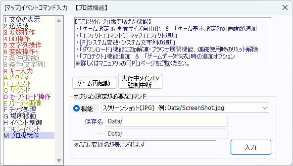

イベントコマンド 【プロ版機能】 プロ版の追加コマンド
プロ版機能は、「WOLF RPGエディター3 プロ版」使用時のみ表示されるコマンドです。

【各機能の説明】
・ゲーム再起動（引数継承）
ゲームをウィンドウごと終了させ、再び起動させます。
主に、オンラインアップデート用のデータをダウンロードした後に使うことになるでしょう。
（再起動時、「Data/_NetDownloadData」フォルダに入っている中味がDataフォルダに展開される処理が実行されるため）
なお、起動時のコマンドライン引数はそのまま継承されます。
・実行中メインEv強制中断
同時に1つしか実行できない「決定キー起動」や「接触起動」、「自動起動」といった
「メイン実行イベント(仮称)」に対してこのコマンドを実行すると、
並列イベント内からでも強制的に「イベント処理中断」させることができます。
- 「〜〜完了までウェイト」を指定したコマンド実行中に止めた場合、ウェイトは中断されますが、
実行されていた処理自体は続行されます（動作指定、スクロール、ダウンロード機能など）
- 「選択肢」コマンドや「文字列操作」コマンドの「キーボード入力」、「キー入力」コマンドの「キー入力待ち」も中断されます。
- ウェイトありのトランジション中や、場所移動中はそもそも並列イベントが進まないので
「実行中メインEv強制中断」は実行できません。
・オプション設定が必要なコマンド
+ スクリーンショット（JPG)
現在映っている画面を撮影し、JPGスクリーンショットとして保存します。品質は85です。
保存先は「Data/〜」「Save/〜」のように指定してください。
（Dataフォルダ内はファイル削除できないので、Saveフォルダの方がおすすめです）
+ スクリーンショット（PNG)
現在映っている画面を撮影し、PNGスクリーンショットとして保存します。
高品質に撮影できますが、容量は大きくなります。
保存先は「Data/〜」「Save/〜」のように指定してください。
※「ピクチャ」コマンド側で「Save」フォルダ内のスクリーンショットを読み込む場合は「../Save/〜〜.png」と指定してください。最初の「../」が重要です。
※なおJPG/PNG共に、スクリーンショット撮影した画像をすでにピクチャとして表示していた場合、この機能で新たにスクリーンショットした瞬間に「同ファイルを表示中の全ピクチャ」が「最新の画像」に切り替わります。
（「ピクチャ側のファイル名が同じもの」を探して切り替えているので、ファイル名の指定方法がピクチャ時とスクリーンショット時で大きく違うと切り替わらない場合があります）
+ フォルダ作成
フォルダを作成します。
作成先は「Data/〜」のように、GamePro.exeと同じ場所を基準として指定してください。
+ ファイルコピー
ファイルをコピーできます。コピー先フォルダは先に作っておいてください。
コピー元/先は「Data/〜」のように、GamePro.exeと同じ場所を基準として指定してください。
+ ファイル削除（Dataﾌｫﾙﾀﾞ操作禁止）
ファイルを削除できます。
ただし開発中のデータなどが消えてしまう可能性があるため、「Data」フォルダ内は指定できません。
主にSaveフォルダなどでの操作用です。
削除対象は「Save/〜」のように、GamePro.exeのある場所から見たフォルダ位置を指定してください。
+ 処理停止ｳｪｲﾄ（ﾐﾘ秒）
画面更新含め、全処理を指定ミリ秒止められます（実際にウェイトが入るのはフレーム切り替わり時）。
ヒットストップ演出やスロー演出、処理落ち再現などに使用できるでしょう。
+ ゲーム再起動（引数設定あり）
任意のコマンドライン引数を指定してゲームを再起動できます。
「-basic <基本データフォルダ>」と指定して「基本データフォルダ」を別のフォルダに切り替えたり、
ゲーム内で独自の引数指定を反映させられます。
コマンドライン引数については、以下の起動時引数のページを参考にしてください。
【Game(Pro).exeで使える引数の一覧ページ】
※「テストプレイフラグ(Test_Of_Main)」と「デバッグウィンドウフラグ(Use_Debug_Window)」が
今回のプレイ起動時に指定されていた場合は、引数に未入力でも自動でこれら2つが引数の末尾に付け直されます。